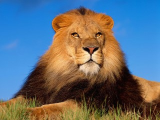

Лев (лат. Panthera leo) — вид хищных млекопитающих, один из четырёх представителей рода пантер (Panthera), относящегося к подсемейству больших кошек (Pantherinae) в составе семейства кошачьих (Felidae). Является второй по величине после тигра из ныне живущих кошек — масса некоторых самцов может достигать 250 кг
Больша́я па́нда, или бамбу́ковый медве́дь (лат. Ailuropoda melanoleuca) — млекопитающее семейства медвежьих (Ursidae) со своеобразной чёрно-белой окраской шерсти, обладающее некоторыми признаками енотов. Единственный современный вид рода Ailuropus подсемейства Ailuropodinae. Большие панды обитают в горных регионах центрального Китая: Сычуань и Тибет. Со второй половины XX века панда стала чем-то вроде национальной эмблемы Китая. Китайское имя (熊猫 xióngmāo сюнмао) означает «медведь-кошка». Его западное имя происходит от малой панды. Раньше его также называли пятнистым медведем (Ailuropus melanoleucus).